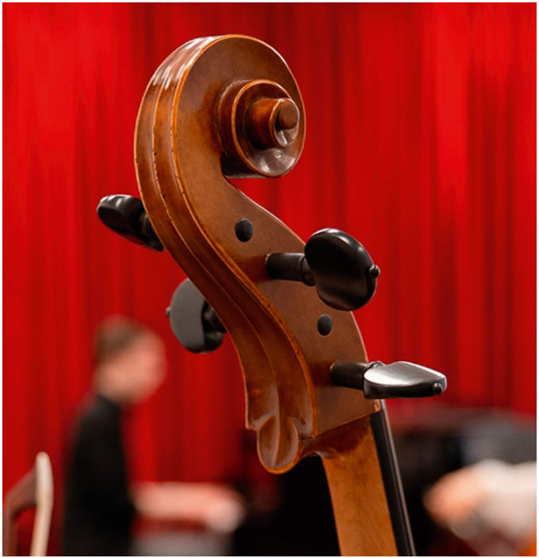

Приветствие · с. 3–5
Приветствие
Письмо научного руководителя Института Т.А. Лукашиной к первому выпуску
Всероссийская виолончельная академия представляет свой новый проект: журнал для виолончелистов и всех, кто любит виолончельное искусство.
За удивительно короткий срок Академия от небольшого форума с концертами, мастерклассами и творческими встречами превратилась в настоящую виолончельную «страну», где виолончелисты любого возраста, статуса и национальности чувствуют причастность к большому и искренне-благожелательному сообществу, могут проявить себя в разных ипостасях, получить высокопрофессиональные рекомендации и просто пообщаться с коллегами.
Академия стала той территорией творчества, которая даёт старт многим начинаниям в разных областях виолончельного искусства. Это концерты и фестивали, конкурсы и мастер-классы, экспериментальные лаборатории и творческие встречи, лекции и издательская деятельность – всё, что позволяет поделиться опытом и вдохновением, знаниями и талантом, а значит продолжить, распространить и укрепить традиции славной русской виолончельной школы, которая всегда занимала ведущую позицию в мировой музыкальной культуре.
Наш журнал будет освещать все стороны виолончельного «бытия»: от истории самого инструмента и рассказов о выдающихся исполнителях до вопросов психологии и интерпретации виолончельных произведений. Мы будем брать интервью у именитых маэстро и юных музыкантов, выдающихся педагогов и мастеров. Поговорим об исторически информированном исполнительстве и современных техниках игры. Поможем методическими материалами и познакомим с редко исполняемыми и совсем неизвестными произведениями. Представим анализ как «жемчужин» виолончельного репертуара, так и партий в камерных ансамблях и оркестровых произведениях. Мы надеемся, что наши публикации будут полезны начинающим виолончелистам и их родителям, студентам и оркестрантам, педагогам школ и консерваторий, концертирующим исполнителям и всем поклонникам самого прекрасного инструмента!
Конечно же, мы будем знакомить наших читателей с новостями и анонсами как Академии, так и в целом с информацией о важных виолончельных событиях. В каждом номере основательница Всероссийской виолончельной академии Анастасия Ушакова поделится самыми актуальными мыслями, идеями, планами…
Мы с большой увлечённостью и любовью создавали первый номер журнала и надеемся, что он найдёт свою аудиторию – дружелюбную и жадную до знаний, стремящуюся к совершенству и преданную своему инструменту.
Научный руководитель
Института исследований и методологии виолончельного искусства Всероссийской виолончельной академии
Татьяна Алексеевна Лукашина
